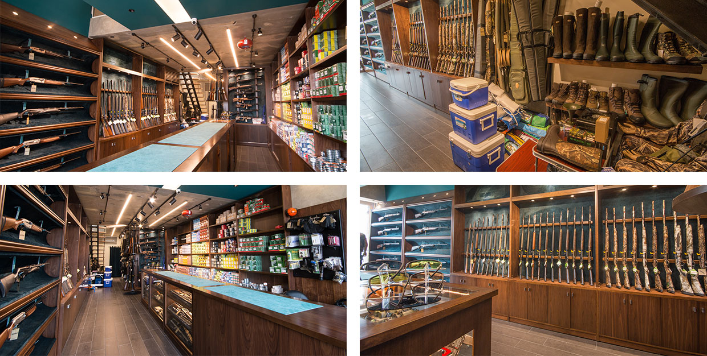

Curated Equipment
A considered selection of shotguns, ammunition, clothing, footwear and field accessories for hunting, sporting and outdoor use.
A specialist destination for hunting, sporting and outdoor equipment, shaped around personal guidance and the showroom experience.
Based in Lebanon, LE FUSIL brings together a considered selection of hunting, sporting and outdoor equipment. The showroom includes shotguns, ammunition, clothing, footwear and field accessories chosen to support different levels of experience and practical needs.
Our approach is personal and straightforward. Visitors can explore the collection in person, compare available options and receive guidance from the LE FUSIL team before making a decision.

A considered selection of shotguns, ammunition, clothing, footwear and field accessories for hunting, sporting and outdoor use.
Visitors can compare available options and discuss practical requirements directly with the LE FUSIL showroom team.
Product support, current availability and after-sales assistance are handled through direct communication with the store.
Visit the showroom to explore the collection, compare available equipment and speak directly with the LE FUSIL team.
Yara Center · Jdeideh · Mount Lebanon